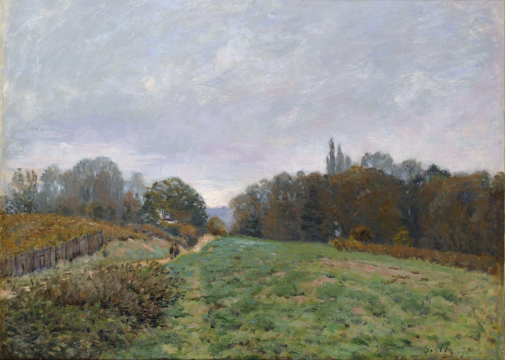

Альфред Сислей
Landscape at Louveciennes (Пейзаж в Лувесьене), 1873

Холст, масло, 54 x 73 см
Национальный музей западного искусства, Токио.
История картины
- Морис Лекланше, Париж
- Аукцион, организованный Морисом Лекланше, отель Друо, Париж, 6 ноября 1924 г., № 95
- Аллард Колл, Париж (приобретён при вышеуказанном аукционе)
- Лорд Кларк, Лондон
- Вильденштейн и Компания
- миссис А.Л. Леопольд Уильямс, Лондон
- ООО Дэвид Каррит, Лондон
- Приобретено НМЗИ, 1982. Во времена Парижской коммуны 1871 года Сислей переехал в маленькую деревушку Лувесьен, расположенную примерно в тридцати километрах к западу от Парижа. За исключением четырехмесячной поездки в Англию летом 1874 года, он прожил в Лувесьене до конца 1874 года. В этот период он вместе с Моне и Ренуаром рисовал пейзажи Сены в Аржантее и леса Марли. Следы его деятельности можно найти в различных районах региона Иль-де-Франс. В течение 1873 года он проводил большую часть своего времени в Лувесьене, где полностью погрузился в создание пейзажей деревни и её окрестностей. Эта работа была написана в 1873 году недалеко от этой деревни. Одна небольшая дорожка пересекает по диагонали холмистое поле, и две фигуры, прогуливающиеся по этой дорожке, притягивают взгляд зрителя в глубину картины и придают интерес к происходящему. В этом пейзаже нет ни одного элемента, который бы особенно привлекал внимание зрителя, поскольку он простирается от травянистой опушки на переднем плане через поля к лесам, а затем к холмам и бескрайнему небу. Большое уважение Сислея к упорядоченности пространства часто можно встретить в его ранних работах, и здесь оно проявляется в точном выражении перспективы на изображении. Сислей использовал чрезвычайно сдержанную палитру, которая позволяет каждому объекту казаться свежим благодаря своим тонким оттенкам.